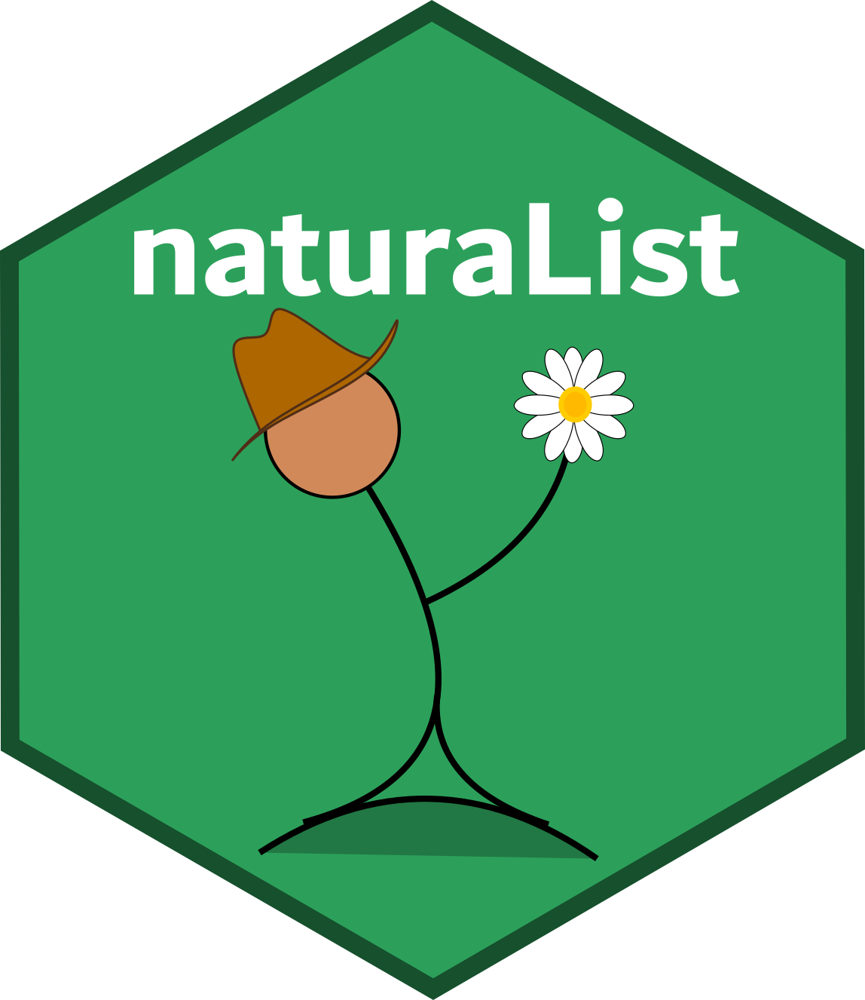

The goal of naturaList package is to provide tools for check identification reliability in species occurrence records data sets. The main functionality of naturaList package is provide an automated way to identify for the taxon of interest, which records has the most reliable level of classification, i.e, those records identified by specialists. In addition other characteristics of the records could be used to derive up to six levels of confidence.
Levels of confidence
The package allows to classify the occurrence records in confidence levels through the function classify_occ(), that comprises the main function of naturaList package. The most reliable identification of a specimen is made by a specialist in the taxa. The other levels are derived from information contained in the occurrence dataset. The default order of confidence levels used in classification process are:
- Level 1 - species was identified by a specialist, if not;
- Level 2 - who identified the species was not a specialist name, if not;
- Level 3 - occurrence record has an image associated, if not;
- Level 4 - the specimen is preserved in a scientific collection, if not;
- Level 5 - the identification was done in filed observation, if not;
- Level 6 - no criteria was met.
The user can alter this order, depending on his/her objectives, except for the Level 1 that is always a species determined by a specialist.
Installation
You can install the package from CRAN:
install.packages("naturaList")Or install the latest released develoment version from github using:
install.packages("devtools")
devtools::install_github("avrodrigues/naturaList")Basics of naturaList package
An extensive explanation of all the features of naturaList package is provided through vignette articles. To conduct a basic classification process through classify_occ function the user must provide only two data frames. The first containing the occurrence records and the second with a list of specialists. The classify_occ() function add a new column in the occurrences dataset named naturaList_levels, which contains the classification.
library(naturaList)
data("A.setosa")
data("speciaLists")
occ.cl <- classify_occ(A.setosa, speciaLists)Naturalist also offer an interactive module that allows to visualize occurrence in space, get information by pointing the occurrence of interest and manually edit occurrence records by point and click. This interactive module is activate through function map_module. An article explaining all features of map_module function can be accessed in this article
Other resources
Auxiliary functions that allows the user to access the effects of filtering procedures based on classification levels are clean_eval and grid_filter functions. A complete example of the usage of these functions can be found in this article.
See vignette for all articles describing the functionalities of naturaList package.